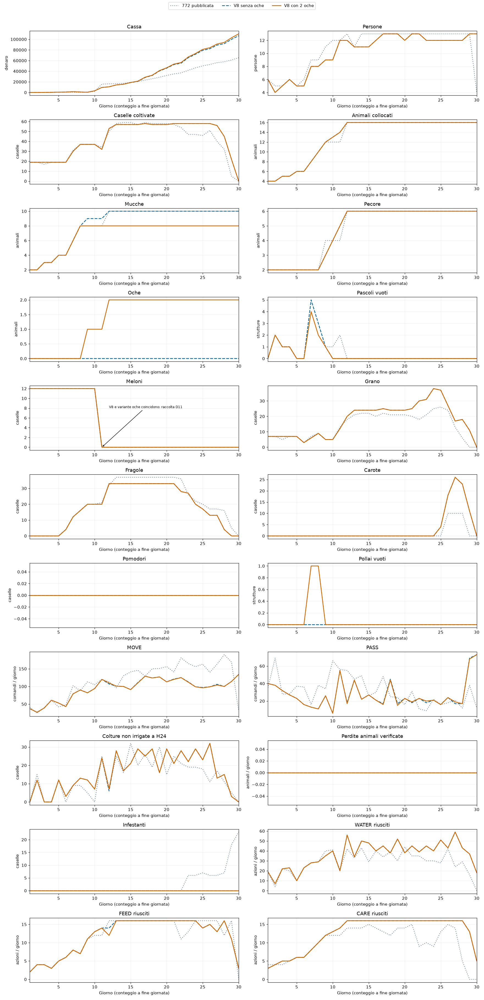

Confronto della V8 con 8 mucche, 6 pecore e 2 oche contro la V8 con 10 mucche e 6 pecore. Le caselle (6,3) e (4,5) diventano pollai. Restano 16 caselle animali, di cui 14 pascoli e 2 pollai: la sigla dei soli pascoli è 7-6-1. Coordinate (x,y) da zero.
Conservati calendario colturale, rotte, aiutante aggiuntivo e regole di mercato della V8; acquisti e vendite rispondono alle nuove specie attraverso le stesse regole sulle scorte osservate. Le giornate di collocamento restano quelle previste per i due animali sostituiti. Non è la ricostruzione del nativo con tre oche.
| Seed | Versione | Cassa | Cassa 775 | Scarto contro 775 | Mucche/pecore/oche | Fragole D6/9/12 | Fughe |
|---|---|---|---|---|---|---|---|
| 180911301 | 772 pubblicata | 80178 | 96530 | -16352 | 10/6/0 | 4/20/28 | 0 |
| 180911301 | V8 senza oche | 82342 | 87310 | -4968 | 10/6/0 | 4/20/33 | 0 |
| 180911301 | V8 con 2 oche | 85740 | 87172 | -1432 | 8/6/2 | 4/20/33 | 0 |
| 180911303 | 772 pubblicata | 65312 | 62688 | 2624 | 10/6/0 | 4/20/32 | 0 |
| 180911303 | V8 senza oche | 106606 | 106981 | -375 | 10/6/0 | 4/20/33 | 0 |
| 180911303 | V8 con 2 oche | 110220 | 108171 | 2049 | 8/6/2 | 4/20/33 | 0 |
Le due oche migliorano la cassa di 3.398 e 3.614 rispetto alla V8 senza oche. Contro la 775 il primo seed resta sotto di 1.432; il secondo passa da −375 a +2.049. Fragole D6/D9/D12: 4/20/33 in entrambi. Variante locale verificata, nessuna nuova submission.
| Seed | Versione | Vendite latte | Vendite uova | Vendite lana | Tutte le vendite | Acquisti | Assunzioni |
|---|---|---|---|---|---|---|---|
| 180911301 | 772 pubblicata | 7166 | 0 | 27271 | 110419 | 22841 | 7400.0 |
| 180911301 | V8 senza oche | 4427 | 0 | 37442 | 111534 | 23588 | 5604.0 |
| 180911301 | V8 con 2 oche | 4367 | 3259 | 37442 | 114731 | 23387 | 5604.0 |
| 180911303 | 772 pubblicata | 11805 | 0 | 5023 | 96065 | 23442 | 7311.0 |
| 180911303 | V8 senza oche | 6821 | 0 | 34036 | 135848 | 23638 | 5604.0 |
| 180911303 | V8 con 2 oche | 7468 | 2900 | 33833 | 139302 | 23478 | 5604.0 |
Il confronto include la reazione del mercato condiviso: i prezzi possono cambiare anche per la 775. Due seed esposti, un solo ruolo, non sono una validazione generale. Le differenze di cassa non vanno attribuite interamente ai ricavi delle uova.
Nella V8 e nel controllo nativo: 12 meloni seminati a D1, presenti fino all’inizio di D11, raccolti durante D11 per 72 unità. Il grafico a fine giornata mostra quindi 12 da D1 a D10 e zero a D11. Sul primo seed V8 la raccolta avviene fra H6 e H20 di D11. Le linee coincidono; il precedente grafico le sovrapponeva.
I conteggi e le raccolte della nuova variante sono verificabili in MELONS.json. Nei grafici seguenti le versioni hanno anche tratteggi differenti e il pannello meloni segnala la sovrapposizione.
Geometria verificata casella per casella, entrambe le oche effettivamente collocate, 719 chiamate e zero errori per caso; hash delle fonti identici al protocollo congelato. Scorte finali e perdite colturali sono in VERIFICATION.json.
La prima prova è esclusa: una costruzione conservata dalla sequenza originale aveva lasciato (6,3) come pascolo e impedito di collocare la seconda oca. La V2 corregge anche quel comando BUILD, senza cambiare la rotta. Le prove iniziali restano conservate in artifacts/operational772_goose2.
